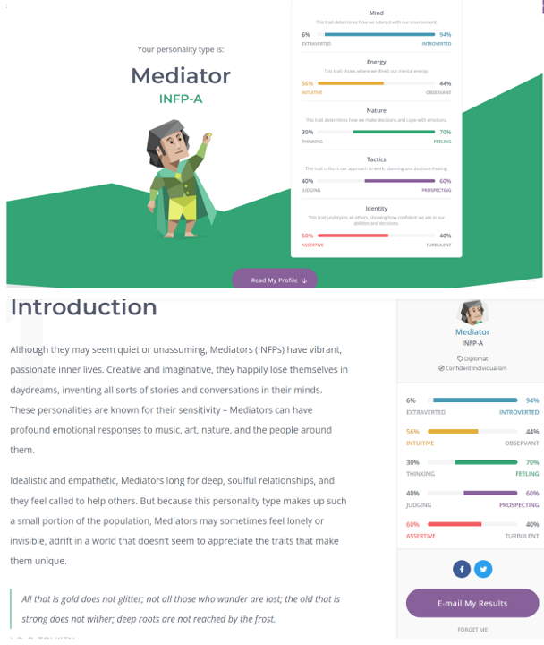
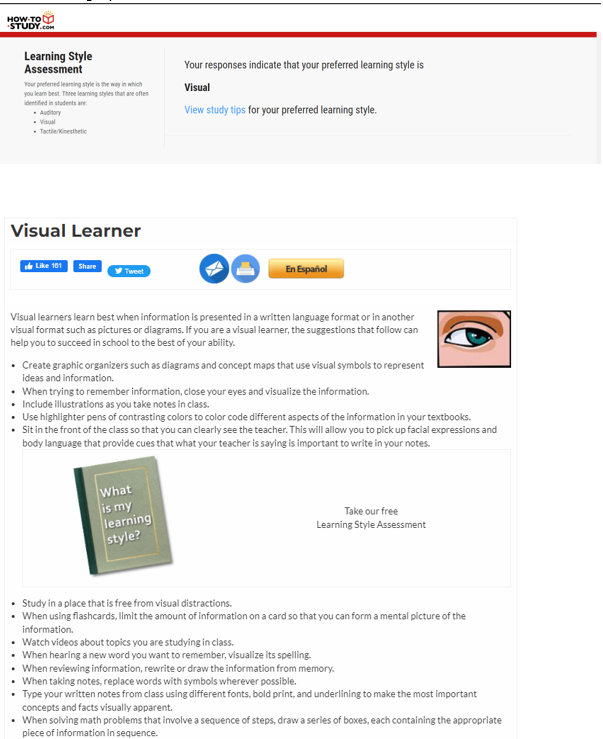

Myers-Briggs Result
Learning style Result
Big 5 Personality Result

Myers-Briggs: There are aspects to the analysis in which I agree and disagree with. Firstly, for the sections that I found profound was being scored as an Introvert and Intuitive. The description of Introvert suggests that I get exhausted from social interaction, in which I find true from a general perspective. I wouldn’t particularly say that I’m shy, but when in a discussion, often I start off strong, but after a while, I get exhausted and burnt out and consequently, tend to just sit and listen.
I also find being categorised as intuitive highly agreeable. It describes me as imaginative, open-minded and curious as well as focusing on future possibilities rather than concrete idea. I do enjoy playing with the ideas of what will happen in the future, both personally as well as socially. What kind of life will I have in 5,10 years’ time? Will I have achieved my dreams by then? What will future cities look like? How much of society will have been integrated by automation? I also find the point of being open-minded agreeable. Although making preconceived assumptions is an inevitable in everyone, I try to keep those notions in check by putting myself in other’s position.
Subsequently, there are categories in which I find aspects that are true, as well as false. Those being the Feeling and Assertive results. Firstly, the description of being less competitive under the Feeling category I find true as often, I don’t push myself to the accord of others in order to prove myself, but rather, take it at my own pace. I like to challenge myself for my own benefit and dislike the concept of competition. On the other hand, it described me as sensitive and emotionally expressive which I don’t find entirely agreeable. I do know that at time, I can be sensitive, in situations where I feel targeted without a valid motive as well as not having my inputs fairly heard, although most times, I keep those emotions suppressed and deal with them intrinsically. I don’t find myself emotionally expressive, rather, I tend to find myself thinking before speaking.
I also challenge some of the descriptions of being assertive. I find it true that I try not to worry too much and don’t push myself in pursuit of my own goals. That is to say that I take my own pace that I feel comfortable in working towards my goals. That point that I find dumbstruck is being resistant to stress. I’m not the type that can push through tasks and ignore the feeling of being overwhelmed and stress. I would say that I break down my goals into manageable tasks to ease the burden and when I feel overwhelmed or mentally exhausted, I take a break and enjoy games, movies and the like.
The last point in which I find completely opposite of who I am is the category of Prospecting as it describes me as being very good at improvising. There have been many encounters where I’ve been forced into the spotlight and either I don’t know how to react or stutter my way through and response. I’m the type that entertains ideas in thought before I express them verbally and because of this, I could not improvise to save my life.
I can certainly find aspects of my learning style reflecting that of a Visual Learner. I do have difficulties when learning a new concept that is wholly explained in words, but with the usage of diagrams, pictures and videos, I do feel as if the learning curve has been made easier to a degree. Subjects such as statistics, maths and similar data and number-centric subjects, I do find it easier to understand a concept when words and diagrams are incorporated together. Even though I am described as a visual learner, I would have difficulties if something was explained only using a diagram. For the most part, I could only agree with being a visual learner in this aspect.
There are some learning tips that work well for me in the given list. Those being consuming information in a written and visual format, studying in a distraction-free environment, watching videos and tutorials and using flashcards. The aspect of learning in a distraction-free environment is quite ambiguous, but generally, I do my best when studying at home, where there are little noise and visual cues that could distract me. Watching videos and tutorials tend to be the best learning method when complex concepts are involved, whereas the use of flashcards tends to work best for me when trying to learn new words in a different language.
However, I don’t think that being a visual learner fully represents my learning style. When there is a need to convert learnt theories and concepts to execution, I rely on learning by doing. Especially when it comes to coding. For instance, when watching the scrimba tutorials, I felt that the problems were too easy, mostly because of being hand-held and ease of questions being tested. However, when applying those principles into my own website, I often found myself perplexed by why my implementations were not going accordingly. Searching for a solution online, referencing resources such as W3school and even going back to some parts of the scrimba tutorials helped me overcome those problems. However, it was repeatedly coding that facilitated the learning of the behaviour of HTML.
Firstly, I find most of the description of Openness like my own character. I enjoy playing with ideas, especially if it is theoretical or a possibility. In doing so, I tend to be considered less practical in some respects such as finances and my future ambitions. The act of discovering new things is symbiotic with my introversion from the Myers-Briggs results in that it is dependent on my energy levels. If I feel like walking towards university, I tend to take routes that I have been on before or try new foods that catch my eye. I also find the part about being interested in different cultures true, as someone who is learning Japanese, I am quite fond of the cultural comparisons in differences between ways of living, traditional events and many more.
I find the analysis of Conscientiousness quite true, splitting as a 50-50 ratio. That is at times I can be highly disciplined. For instance, when it came to learning Japanese, especially the start, I would pour hours every night into learning. Other times where I display a high discipline and focus on a task is when a deadline approaches, I tend to drop every other task and prioritise completing the most immediate tasks. On the other hand, I can at times, be quite lazy and spontaneous when it comes to meeting goals and deadlines. These moments usually occur when I’m not interested in a subject, or when I feel that I can complete the task later, resulting in procrastination. I also find it agreeable in being described as easily side-tracked and tend to focus on short term gratification.
On the point of Extraversion, I find it agreeable in being categorised as an introvert. That is not to say that I disdain social interaction, rather, I avoid those opportunities and social interactions. I find it mentally exhausting spending a considerable amount of time with people, even if they are close to me. That is to say that I do not enjoy being in the spotlight as well as do not crave the attention and am content with living by myself, enjoying my own company. I find the point about not working as hard as others in achieving social rewards such as friendship, admiration and power, hard to argue as these social aspects hold little importance to me.
The penultimate point about Agreeableness, I find accurate in some respects. I think that being described as putting others needs ahead of mine & cooperating rather than competing true in some regards. It’s not that I prioritise others needs before mine, rather, I would prefer everyone get along, especially in a team environment. Often, when a consensus has been made in a team meeting or environment, I tend to hold back on my own ideas and arguments if a decision has been agreed based on a majority. The point about reserving my own needs may also be attributed by the fact that I am an introvert.
Lastly, about Neuroticism, I find the results quite agreeable, in the sense that I am less prone to expressing my negative emotions. The only times that I may feel negative about something is when it directly affects me or the people important to me. Scoring low in this category implies that I feel less empathy towards others’, which I do not particularly agree on. Rather, being open-minded, I believe that I am more easily able to understand how a person is feeling.
Based on the results alone, I believe there are some points of character that can contributed positively to the team. Firstly, being open-minded means that I am willing to listen and discuss different ideas and be able to facilitate an environment where team members do not feel as if their ideas are less valid than others. I think it’s also important to acknowledge each other’s strong and weak points is paramount to working as a collective.
I also think that the ability to keep my own emotions in check and thinking before I speak are assets that I can use to my benefit in a team environment. For example, if my ideas are shot down, I understand that a consensus would have been formed from discussion and that it’s not a personal vendetta. I think the ability to not convolute one’s emotions in a team environment is important.
There are also several attributes that may have an adverse effect on a team. Firstly, being less competitive and being generally less disciplined and spontaneous may have implications of me falling behind in my deliverables. I think having highly achieving team members as a positive, however, there may be instances where it may come into conflict with my interests and the pace that I complete tasks.
I also think being an introvert may have negative connotations when working in a group environment. When ideas are shared around, I seldomly take the initiative to put my own ideas forward. Consequently, it may result in me not pulling my share when it comes to brainstorming and meeting discussions.
I think the main points where I must take precautions revolve around my ability to contribute fairly to a discussion, rather than just being in the background. With that in mind, I think it would be beneficial if I actively took initiative when it comes to brainstorming what our project may entail. That is putting forward what I want to achieve and implement in the outcome.
Being a person who tends to procrastinate until a deadline approaches, I believe it would be beneficial if I broke down my goals into manageable tasks and track my progress on each sub-task. Using tools such as calendars and notes on when I want a certain task done would help me stay focused and disciplined on achieving my deliverables.